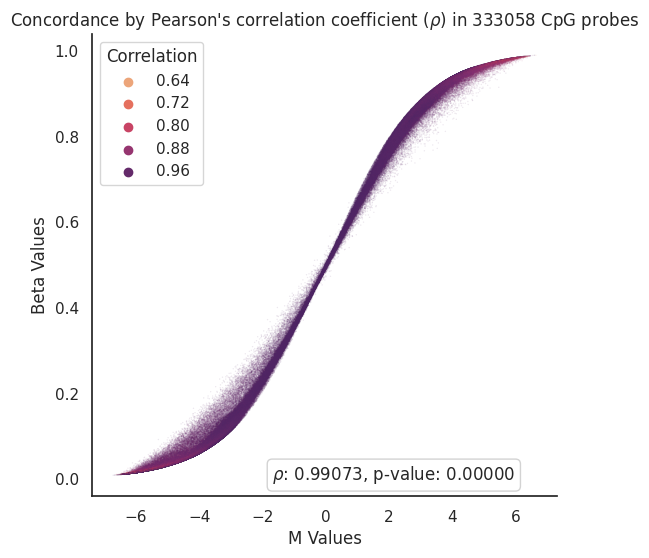
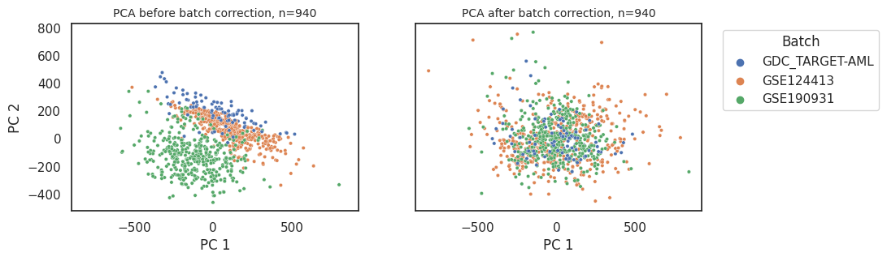
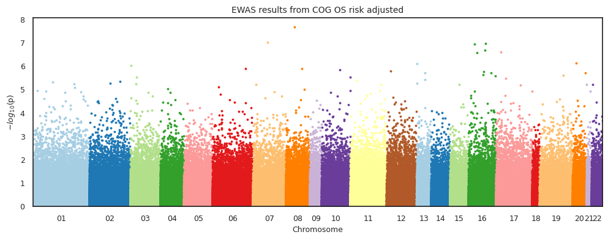
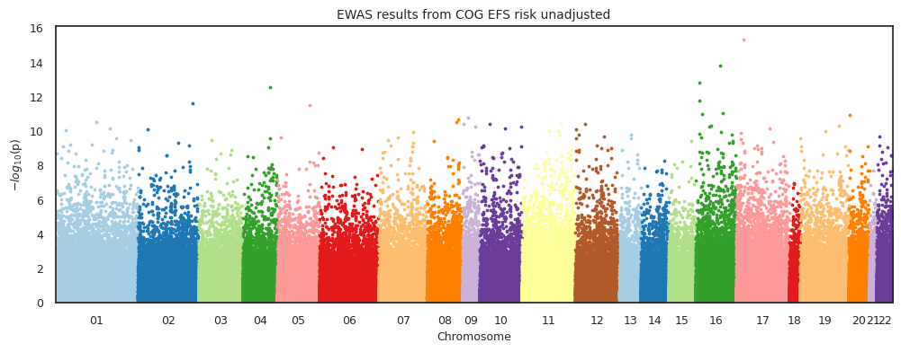
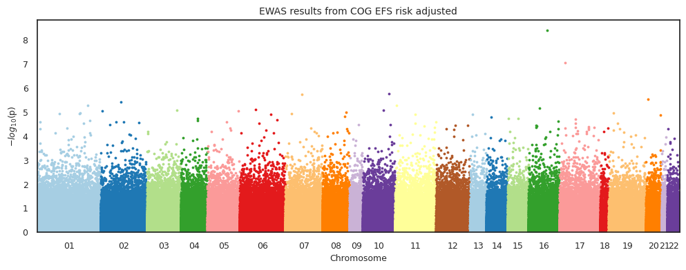

Epigenome Wide Association Study#
Epigenome-wide association study (EWAS) using Cox proportional hazards regression (CoxPH) model with event time as the outcome and DNA methylation as the predictor.
Where the data at?#
Show code cell source
import pandas as pd
import sys
sys.path.append('../')
mount = '/mnt/d/'
input_path = mount + 'MethylScore/Intermediate_Files/'
output_path = mount + 'MethylScore/Processed_Data/'
zhou2016_probes_path = '/mnt/d/MethylScore/UnreliableProbesList_Zhou2016/EPIC.anno.GRCh38.tsv'
Load data#
# read df_discovery and df_test
df_methyl = pd.read_pickle(
input_path+'3308samples_333059cpgs_nobatchcorrection_bvalues.pkl').sort_index()
# Load clinical data
df_labels = pd.read_csv(input_path+'discovery_clinical_data.csv',
low_memory=False, index_col=0)
Remove samples based on certain clinical features#
Select samples from AAML1031, 0531, and 03P1 clinical trials#
Show code cell source
df1 = df_labels[df_labels['Clinical Trial'].isin(['AAML0531', 'AAML1031', 'AAML03P1'])]
print(
f'{df_labels.shape[0]-df1.shape[0]} samples were removed. {df1.shape[0]} samples remaining.')
2027 samples were removed. 1281 samples remaining.
Select diagnostic samples only#
Show code cell source
df2 = df1[df1['Sample Type'].isin(
['Diagnosis', 'Primary Blood Derived Cancer - Bone Marrow', 'Primary Blood Derived Cancer - Peripheral Blood'])]
print(
f'{df1.shape[0]-df2.shape[0]} samples were removed. {df2.shape[0]} samples remaining.')
332 samples were removed. 949 samples remaining.
Remove duplicate samples#
Show code cell source
df3 = df2[~df2['Patient_ID'].duplicated(keep='last')]
print(
f'{df2.shape[0]-df3.shape[0]} samples were removed. {df3.shape[0]} samples remaining.')
9 samples were removed. 940 samples remaining.
Match samples in clinical data to samples in methylation data#
Show code cell source
# Match samples in clinical data to samples in methylation data
df_methyl_filtered = df_methyl[df_methyl.index.isin(df3.index)].iloc[:, 1:]
print('Samples in clinical data matched to samples in methylation data.')
Samples in clinical data matched to samples in methylation data.
Transform to M-values#
Show code cell source
import math
import numpy as np
from scipy import stats
import seaborn as sns
import matplotlib.pyplot as plt
def beta2m(val):
'''Transfrom beta-values into m-values'''
return math.log2(val/(1-val))
x_train_m = df_methyl_filtered.apply(np.vectorize(beta2m))
# Get correlation between Beta and M Values
corr = x_train_m.corrwith(df_methyl_filtered, axis=0)
# Glue them into same dataframe for vizualization purposes
beta_to_m_values = pd.concat([x_train_m.mean(),df_methyl_filtered.mean(),corr],axis=1,
keys=['M Values','Beta Values','Correlation'],
join= 'inner')
def draw_scatterplot(df,x,y,hue,s):
# Define theme
sns.set_theme(style="white")
f, ax = plt.subplots(figsize=(6, 6))
sns.despine(f, left=False, bottom=False)
# Define scatterplot
sns.scatterplot(x=x, y=y,
hue=hue, palette='flare', s=s,
sizes=(1, 8), linewidth=0, alpha=0.1,
data=df, ax=ax)
# Calculate Pearson’s correlation coefficient (r)
# and its two-tailed p-value (p)
r,p = stats.pearsonr(df[x],df[y])
# Annotate r and p into the plot
plt.annotate(fr'$\rho$: {r:.5f}, p-value: {p:.5f}',
xy=(6.0, 0.01), xycoords='data',
ha='right', va='center',
bbox={'boxstyle': 'round', 'facecolor': 'none',
'edgecolor': 'lightgray'})
# Define plot specs
plt.xlabel(x)
plt.ylabel(y)
plt.title(r"Concordance by Pearson's correlation coefficient ($\rho$) in " + str(len(df)) + ' CpG probes',
fontsize = 12)
# Save plot figure
# plt.savefig('../Figures/Beta_to_M_Values_' + str(len(df)) + '_scatterplot' + '.png',
# bbox_inches='tight', dpi=300)
return(plt.show())
draw_scatterplot(df=beta_to_m_values,x='M Values',y='Beta Values',hue='Correlation',s=1)

Perform batch correction#
pyCombat is a Python tool for batch effects correction in high-throughput molecular data using empirical Bayes methods
Implementation Preprint: bioRxiv
Original Paper: Adjusting batch effects in microarray expression data using empirical Bayes methods
Show code cell source
from combat.pycombat import pycombat
# Correct batch effects in the training dataset
df_batchcorrected = pycombat(data = x_train_m.T, batch = df_methyl[df_methyl.index.isin(df3.index)].iloc[:, 0]).round(3).T
print('Succesfully corrected batch effects in the training dataset.')
Found 3 batches.
Adjusting for 0 covariate(s) or covariate level(s).
Standardizing Data across genes.
Fitting L/S model and finding priors.
Finding parametric adjustments.
Adjusting the Data
Succesfully corrected batch effects in the training dataset.
Evaluate batch effects#
Show code cell source
from sklearn.preprocessing import StandardScaler
from sklearn.decomposition import PCA
import pandas as pd
import seaborn as sns
import matplotlib.pyplot as plt
def standardize_data(df):
'''Standardizes the data.'''
return StandardScaler().fit_transform(df.T)
def perform_pca(std_data):
'''Performs PCA on standardized data.'''
pca = PCA(n_components=2, random_state=42)
return pca.fit_transform(std_data)
def create_principal_df(pca_data, df):
'''Creates a DataFrame with the PCA data.'''
principal_df = pd.DataFrame(data=pca_data, columns=['PC1', 'PC2'], index=df.columns)
principal_df['hue'] = df_methyl[df_methyl.index.isin(df3.index)].iloc[:, 0]
return principal_df
def filter_df(df, principal_df, threshold):
'''Filters the DataFrame by removing outliers.'''
outliers = principal_df[principal_df['PC1'] >= threshold].index
return df.drop(outliers, axis=1)
X_std = standardize_data(df_batchcorrected.T)
principal_components = perform_pca(X_std)
pcs_batchcorrected = create_principal_df(principal_components, df_batchcorrected.T)
X_std = standardize_data(x_train_m.T)
principal_components = perform_pca(X_std)
pcs_uncorrected = create_principal_df(principal_components, x_train_m.T)
def plot_data(principal_df, non_outliers):
'''Plots PCA data.'''
fig, (ax1, ax2) = plt.subplots(1, 2, figsize=(10, 3), sharex=True, sharey=True)
for df, ax, title, legend in [(principal_df, ax2,
'PCA after batch correction, n=' + str(principal_df.shape[0]), 'full'),
(non_outliers, ax1,
'PCA before batch correction, n=' + str(non_outliers.shape[0]), False)]:
sns.scatterplot(data=df, x='PC1', y='PC2', hue='hue', s=10, alpha=1, ax=ax, legend=legend)
ax.set_title(title, fontsize=10)
ax.set_xlabel('PC 1')
ax.set_ylabel('PC 2')
plt.legend(bbox_to_anchor=(1.05, 1), loc='upper left', title='Batch')
plt.show()
plot_data(pcs_batchcorrected, pcs_uncorrected)

Note
GDC_TARGET-AML contains AAML0531 and 03P1 samples from methylation array 450k.
GSE124413 contains AAML0531 and 03P1 samples from methylation array EPIC.
GSE190931 contains AAML1031 samples from methylation array EPIC.
Save dataframe for other analyses#
Show code cell source
# # Save file as csv
# df_batchcorrected.to_csv(output_path+'methylation_dataset_m-values_COG-924-dx-pts_batch-corrected_FMarchi-9-18-23.csv')
# # Save file as .RData
# import pyreadr
# pyreadr.write_rdata(output_path+'methylation_dataset_m-values_COG-924-dx-pts_batch-corrected_FMarchi-9-18-23.RData', df_batchcorrected.reset_index())
Run CoxPH-EWAS#
Import custom functions adapted from methylize#
Show code cell source
from source.methylize_custom_code.diff_meth_pos_custom import *
new_risk = pd.read_csv(input_path + 'updated_risk_group_COG_RR_1-10-2024/COG_risk_added_v2_cleanedFM.csv',
index_col=0,)
df4 = df3.join(new_risk[['Cyto/Molecular Risk']])
import seaborn as sns
sns.set_theme(style="white")
def impute_by_mean(df):
'''Impute missing values by computing feature average'''
return df.fillna(df.mean())
Overall survival - previous risk group#
Show code cell source
import seaborn as sns
sns.set_theme(style="white")
# # ewas_os_cog_unadjusted = diff_meth_pos_custom(meth_data = df_batchcorrected,
# # duration = df3['os.time'],
# # event_observed = df3['os.evnt'],
# # pheno_data = df3['os.time'], # not used
# # covariates = False,
# # regression_method = "coxph",
# # export = 'pkl',
# # verbose = True,
# # filename=output_path + 'ewas_dmr/ewas_cog_os_batch_corrected')
# ewas_os_cog_unadjusted = pd.read_pickle(output_path + 'ewas_dmr/ewas_cog_os_batch_corrected_risk_unadjusted.pkl')
# manhattan_plot(stats_results=ewas_os_cog_unadjusted,
# palette='Paired',
# save=False,
# suggestive=True,
# significant= False,
# width=12,
# height=4,
# statsmode=False,
# bonferroni=False,
# fontsize=9,
# array_type='450k',
# explore=False,
# border = True,
# label_sig_probes=False,
# fwer=0.05,
# cohorts= " COG OS risk unadjusted",
# filename='../Figures/Manhattan_Plots/ewas_os_unadjusted')
Overall survival - updated RR risk group#
Show code cell source
df4 = df4.assign(Risk_Group_Bin=df4['Cyto/Molecular Risk'].map({'Low':0, 'Standard':0.5,'High':1}))
covar_os = round(impute_by_mean(df4[['os.evnt','os.time','Risk_Group_Bin']]),3)
# ewas_os_cog_adjusted = diff_meth_pos(meth_data = df_batchcorrected,
# duration = covar_os['os.time'],
# event_observed = covar_os['os.evnt'],
# pheno_data = covar_os['os.time'], # not used
# covariates = covar_os['Risk_Group_Bin'],
# regression_method = "coxph",
# export = 'pkl',
# verbose = False,
# filename=output_path + 'ewas_dmr/ewas_cog_os_batch_corrected_risk_adjusted')
ewas_os_cog_adjusted = pd.read_pickle(output_path + 'ewas_dmr/ewas_cog_os_batch_corrected_risk_adjusted.pkl')
manhattan_plot(stats_results=ewas_os_cog_adjusted,
palette='Paired',
save=False,
suggestive=True,
significant= False,
width=12,
height=4,
statsmode=False,
bonferroni=False,
fontsize=9,
array_type='450k',
explore=False,
border = True,
label_sig_probes=False,
fwer=0.05,
cohorts= " COG OS risk adjusted",
filename='../Figures/Manhattan_Plots/ewas_os_unadjusted')

Event-free survival - previous risk group#
Show code cell source
# import methylize
# import seaborn as sns
# sns.set_theme(style="white")
# # ewas_efs_cog_unadjusted = diff_meth_pos_custom(meth_data = df_batchcorrected,
# # duration = df3['efs.time'],
# # event_observed = df3['efs.evnt'],
# # pheno_data = df3['efs.time'], # not used
# # covariates = False,
# # regression_method = "coxph",
# # export = 'pkl',
# # verbose = True,
# # filename=output_path + 'ewas_dmr/ewas_cog_efs_batch_corrected')
# ewas_efs_cog_unadjusted = pd.read_pickle(output_path + 'ewas_dmr/ewas_cog_efs_batch_corrected_risk_unadjusted.pkl')
# manhattan_plot(stats_results=ewas_efs_cog_unadjusted,
# palette='Paired',
# save=False,
# suggestive=False,
# significant= False,
# width=12,
# height=4,
# statsmode=False,
# bonferroni=False,
# fontsize=9,
# array_type='450k',
# explore=False,
# border = True,
# label_sig_probes=False,
# fwer=0.05,
# cohorts= " COG EFS risk unadjusted",
# filename='../Figures/Manhattan_Plots/ewas_efs_unadjusted')

Event-free survival - updated risk group#
Show code cell source
covar_efs = round(impute_by_mean(df4[['efs.evnt','efs.time','Risk_Group_Bin']]),3)
# ewas_efs_cog_adjusted = diff_meth_pos(meth_data = df_batchcorrected,
# duration = covar_efs['efs.time'],
# event_observed = covar_efs['efs.evnt'],
# pheno_data = covar_efs['efs.time'], # not used
# covariates = covar_efs['Risk_Group_Bin'],
# regression_method = "coxph",
# export = 'pkl',
# verbose = False,
# filename=output_path + 'ewas_dmr/ewas_cog_efs_batch_corrected_risk_adjusted')
ewas_efs_cog_adjusted = pd.read_pickle(output_path + 'ewas_dmr/ewas_cog_efs_batch_corrected_risk_adjusted.pkl')
manhattan_plot(stats_results=ewas_efs_cog_adjusted,
palette='Paired',
save=False,
suggestive=False,
significant= False,
width=12,
height=4,
statsmode=False,
bonferroni=False,
fontsize=9,
array_type='450k',
explore=False,
border = True,
label_sig_probes=False,
fwer=0.05,
cohorts= " COG EFS risk adjusted",
filename='../Figures/Manhattan_Plots/ewas_efs_adjusted')

Select statistically significant CpGs#
Threshold based on suggested-significance p-values (1*10e-6)#
Show code cell source
def select_rows(df, threshold):
return df[df['PValue'] < threshold]
def get_intersection(df1, df2):
return df1[df1.index.isin(df2.index)]
# store the dataframes in a dictionary
data_dict = {
# 'Previous Risk Group': {
# 'os': ewas_os_cog_unadjusted,
# 'efs': ewas_efs_cog_unadjusted,
# },
'Updated Risk Group': {
'os': ewas_os_cog_adjusted,
'efs': ewas_efs_cog_adjusted,
}
}
# empty dictionary to store the results
results = {}
# loop through the data_dict
for condition, dfs in data_dict.items():
top_dfs = {key: select_rows(df, 1*10e-6) for key, df in dfs.items()}
intersection = get_intersection(top_dfs['os'], top_dfs['efs'])
results[condition] = {
'Significant CpG probes in OS': top_dfs['os'].shape[0],
'Significant CpG probes in EFS': top_dfs['efs'].shape[0],
'Significant overlapping CpG probes': intersection.shape[0],
}
# convert results to a pandas DataFrame and display
result_df = pd.DataFrame(results).T
# save the results to an excel file
result_df.to_excel('../data/table_significant_cpgs_OS_EFS_summary.xlsx')
result_df
| Significant CpG probes in EFS | Significant CpG probes in OS | Significant overlapping CpG probes | |
|---|---|---|---|
| Updated Risk Group | 14 | 42 | 4 |
Threshold based on suggested-significance p-values (1*10e-5)#
def select_rows(df, threshold):
return df[df['PValue'] < threshold]
def get_intersection(df1, df2):
return df1[df1.index.isin(df2.index)]
# store the dataframes in a dictionary
data_dict = {
# 'Previous Risk Group': {
# 'os': ewas_os_cog_unadjusted,
# 'efs': ewas_efs_cog_unadjusted,
# },
'Updated Risk Group': {
'os': ewas_os_cog_adjusted,
'efs': ewas_efs_cog_adjusted,
}
}
# empty dictionary to store the results
results = {}
# loop through the data_dict
for condition, dfs in data_dict.items():
top_dfs = {key: select_rows(df, 1*10e-5) for key, df in dfs.items()}
intersection = get_intersection(top_dfs['os'], top_dfs['efs'])
results[condition] = {
'Significant CpG probes in OS': top_dfs['os'].shape[0],
'Significant CpG probes in EFS': top_dfs['efs'].shape[0],
'Significant overlapping CpG probes': intersection.shape[0],
}
# convert results to a pandas DataFrame and display
result_df = pd.DataFrame(results).T
# save the results to an excel file
result_df.to_excel('../data/table_significant_cpgs_OS_EFS_summary.xlsx')
result_df
| Significant CpG probes in EFS | Significant CpG probes in OS | Significant overlapping CpG probes | |
|---|---|---|---|
| Updated Risk Group | 112 | 189 | 17 |
Fetch genes#
Show code cell source
# Define a function to handle repetitive tasks
def process_df(df, other_df, column_drop):
# Join and sort values
df = df.join(other_df.drop(columns=column_drop), how='inner').sort_values(by='PValue')
# Handle columns with multiple genes separated by `;`
for col in ['GeneNames', 'GeneClasses']:
df[col] = df[col].apply(lambda x: ';'.join(set(x.split(';'))))
return df
# Load manifest
zhou2016_probes = pd.read_csv(zhou2016_probes_path,
sep='\t',index_col=0)[['chrm','start', 'end', 'GeneNames',
'GeneClasses','CGIPosition']]
# Get probes from Zhou et al. (2016) that are in ewasOS_un.index
top_efs = process_df(zhou2016_probes, top_dfs['efs'], ['chromosome', 'MAPINFO'])
top_os = process_df(zhou2016_probes, top_dfs['os'], ['chromosome', 'MAPINFO'])
# Save top_efs and top_os to excel
top_efs.to_excel('../data/ewas_cpgs_top_EFS.xlsx')
top_os.to_excel('../data/ewas_cpgs_top_OS.xlsx')
# Get OS probes and add EFS info to it
top_os.join(ewas_efs_cog_adjusted, how='left', lsuffix='_OS', rsuffix='_EFS').to_excel('../data/ewas_cpgs_top_OS_with_EFSinfo.xlsx')
OS suggested-significance probes:#
Show code cell source
from itables import show
show(top_os, classes="display nowrap cell-border")
| chrm | start | end | GeneNames | GeneClasses | CGIPosition | Coefficient | StandardError | HazardsRatio | 95%CI_lower | 95%CI_upper | ZScore | PValue | FDR_QValue | minuslog10value | |
|---|---|---|---|---|---|---|---|---|---|---|---|---|---|---|---|
| Loading... (need help?) |
EFS suggested-significance probes:#
Show code cell source
show(top_efs, classes="display nowrap cell-border")
| chrm | start | end | GeneNames | GeneClasses | CGIPosition | Coefficient | StandardError | HazardsRatio | 95%CI_lower | 95%CI_upper | ZScore | PValue | FDR_QValue | minuslog10value | |
|---|---|---|---|---|---|---|---|---|---|---|---|---|---|---|---|
| Loading... (need help?) |
Save top probes#
Show code cell source
# Select only significant probes
ewas_top_cpgs_os = df_batchcorrected[top_os.index.to_list()]
ewas_top_cpgs_efs = df_batchcorrected[top_efs.index.to_list()]
# Save x to pickle in output_path
ewas_top_cpgs_os.to_csv(output_path + 'ewas_dmr/ewas_top_cpgs_os.csv')
ewas_top_cpgs_efs.to_csv(output_path + 'ewas_dmr/ewas_top_cpgs_efs')
# Print a statement saying that you have saved the data, the shape and the path
print('Succesfully saved the data in ' + output_path + 'ewas_dmr/ewas_top_x.csv')
print('The shape of the data is ' + str(ewas_top_cpgs_os.shape))
Succesfully saved the data in /mnt/d/MethylScore/Processed_Data/ewas_dmr/ewas_top_x.csv
The shape of the data is (940, 189)
Watermark#
Author: Francisco_Marchi@Lamba_Lab_UF
Python implementation: CPython
Python version : 3.8.16
IPython version : 8.12.2
methylize: 1.1.1
pandas : 2.0.2
Compiler : GCC 11.3.0
OS : Linux
Release : 5.15.90.1-microsoft-standard-WSL2
Machine : x86_64
Processor : x86_64
CPU cores : 20
Architecture: 64bit